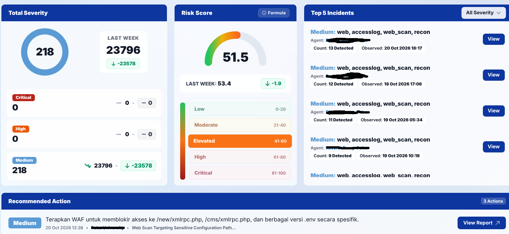
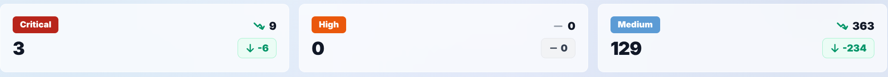
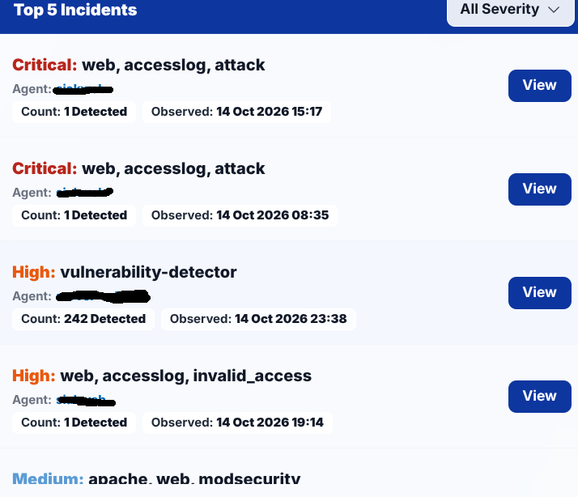
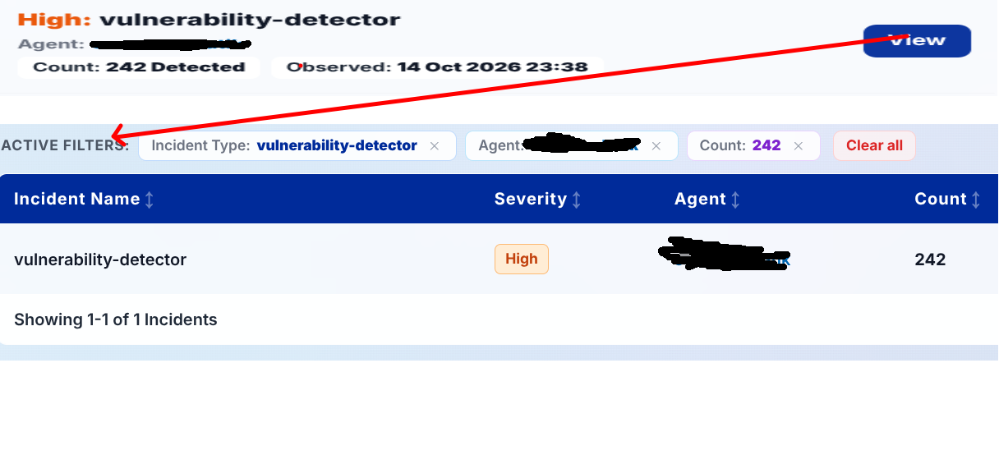
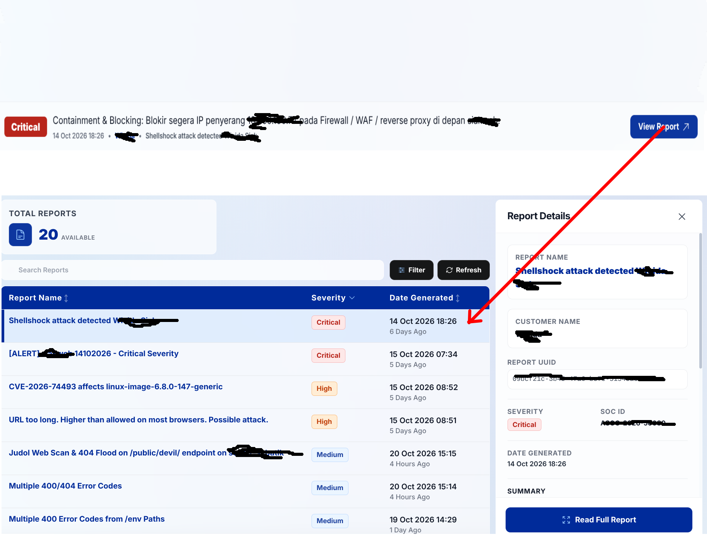

Dashboard
This primary overview page presents a comprehensive synopsis of your infrastructure's security posture. It enables analysts and IT administrators to rapidly comprehend active threats, gauge potential impact levels, and establish mitigation priorities based on real-time data visualizations.

4.1. Total Severity Widget

-
Donut Chart: Visualizes the proportional volume of incidents classified across 3 severity levels:
- Critical (Red): Severe security emergencies requiring immediate containment and remediation.
- High (Orange): High-impact suspicious activities or unauthorized privilege escalations.
- Medium (Blue): Moderate anomalies and recurring reconnaissance events.
-
Previous Period Comparison: Provides trend analysis against baseline intervals (dynamic labels:
YESTERDAYfor Today filter,LAST WEEKfor This Week filter, orLAST MONTHfor This Month filter), featuring percentage trends and absolute variance badges (+X / -X).
4.2. Risk Score Widget
The Risk Score Widget reflects an institutional security risk index ranging from 0 to 100. It incorporates a dedicated Formula action button in the upper-right corner that launches the mathematical calculation modal.
Complete Formula Details:
In-depth mathematical explanations, Wazuh rule severity weight matrices, categorical risk thresholds (Low, Moderate, Elevated, High, Critical), and a complete 4-host calculation simulation are detailed in the dedicated reference section:
4.3. Top 5 Incidents Widget
Displays the 5 most urgent incident events requiring administrative triage within the designated time window.

-
Priority Sorting Criteria:
- Severity Tier (Critical takes precedence over High, followed by Medium).
- Highest Occurrence Frequency (Detection Count).
- Most Recent Observation Timestamp.
- Severity Dropdown Filter: Filters the Top 5 list dynamically by All Severity, Critical, High, or Medium.
- Agent Host Link: Clicking an agent's hostname automatically redirects the analyst to the Devices module with an active search filter on that specific host.
- View Action Button: Clicking the View button on any incident row transitions directly to the Incidents module with pre-applied filters matching incident title, agent name, and grouped detection counts.

4.4. Recommended Actions
Presents immediate remediation guidance extracted directly from open, active investigation cases.

- Each action entry provides an urgency severity badge, concise remediation directives, publication date, tenant identifier, and linked case reference.
- "View Report" Button: Navigates to the corresponding forensic report within the Reports module to review comprehensive technical steps and affected asset lists.